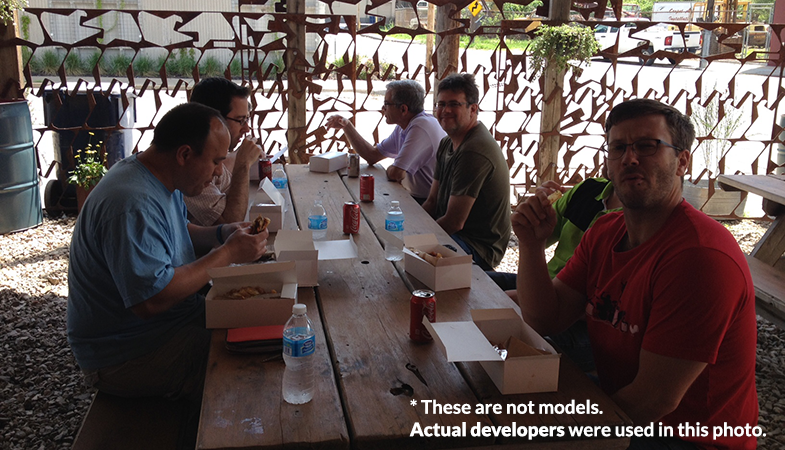

The Importance of Developer Communities
The impact they have, and how to build them
Jennifer Wadella | @likeOMGitsFEDAY
Jennifer Wadella
@likeOMGitsFEDAY
Front-end developer
Girls in STEM/Technology Education Advocate
Founder of Kansas City Women in Technology
Organizer behind CoderDojoKC
So, why are developer communities important?
So... why are developer communities important?
Culture.
Growth-oriented?
New Technology?
Innovative Projects?
Open source work?
Time for R&D?
Full stack development?
Dev Ops?
Maslow's Hierarchy
Acceptance. Maslow's freaking heirarchy.
physiological - health, food, sleep... the most rudimentary things
we need to survive. Once those needs are satisfied, we move on to safety .
accepted and to be part
of a community. The next thing we strive for is self-esteem, confidence, achievement - respect from ourself and others.
self-actualization - achieving your potential. According to Maslow,
a person is always “becoming” and never remains static in these terms. In self-actualization a
person comes to find a meaning to life that is important to them. I don't run into many developers
who are happy with how they are now; they're always looking to learn, grow, and improve. This may
explain the discontent you feel when you're doing maintenance, or on a project that doesn't require
any learning or growth.
Growth.
Surround yourself with greatness.
This goes back a little bit to how communities help at a personal level. Birds of a feather flock together.
You are who your friends are. There are a lot of sayings revolving around this concept. By creating a
community in which you're surrounded by passionate, talented developers, you'll be giving yourself a
direction to grow in, and motivation to become a 'rockstar'.
Knowledge Sharing.
No man(woman) is an island.
Discussion of new technologies, ways to solve common problems, and sharing tools and frameworks to help our workflow are all great outcomes of developer communities.
Collaboration.
A while ago, developers had a reputation for being like mushrooms - they preferred to sit alone in a dark room and code.
While there still be a few of these fungi left, a growing number of developers actually enjoy - and benefit -from interaction.
And by interaction, I mean with other developers, not the project manager who's infamous line 'is it done yet?' has been
repeated enough to make you want to crawl into that previously mentioned dark room.
Community Examples
com·mu·ni·ty [kuh-myoo-ni-tee]
Community is defined as "a social, religious, occupational, or other group sharing common characteristics or interests and perceived or perceiving itself as distinct in some respect from the larger society within which it exists".
Teams
Teams are a perfect example of communities. They may not be ones you made, but instead were hired onto. But your team still has it's own structure and dynamic, and possibly inside jokes.
Disciplines
Your discipline is another community. Our front end developers tend to run around together, the java guys have their own group, and they don't really talk to the .NET guys, the Drupal guys are generally annoyed by us Javascript guys, and NONE OF US mess with the SysAdmins, cause they can really make your life miserable. These are just factions united by their language and skillset.
Workplace User Groups
Earlier I mentioned how developer communities can solve tunnel vision with teams. When I started at my current job, I was on a new team, with all new employees. We had no connections to the rest of the company, and I was the only front-end dev. I didn't realize it at the time, but it was a lonely situation, and I wasn't getting the value of working at a company with a ton of talented developers. At a meetup group I met another recent hire who introduced me to his team, a much larger one. They met once a week for a group called Afternoon Tea - and by tea, they meant beer - to dicuss Javascript : The Good Parts. It was a new experience for me to talk with others just about code, and soon I was inviting people from my alignment team to attend. A few months later, leadership of this group was given to me, and I invited every front end developer company wide. Suddenly we knew exactly what projects were going on, what technologies were being used, and what problems needed to be solved. We had debates over backbone vs knockout, talked about our prefered css compilers, and talked about dream projects.
Other Workplace Communities
Thought Leadership Groups
Centers of Excellence
Lunch & Learns
A few other examples inside the workplace would be thought leadership groups, centers of excellence.
Online Forums
Sometimes I feel like I spend half my life on stack overflow. In college I definitely spent half my life on reddit. Just another community.
User Groups
KC Geek Night
Wordpress KC
NodeKC
Girl Develop It!
Kansas City Code for America Brigade
Lambda Lounge KC
Kansas City Women in Technology
PythonKC
Upfront
Greater Kansas City Drupal User Group
Kansas City Mobile App Developers Group
I'm a native, so the tech landscape I speak to is that of Kansas City. I love living in this happy little bubble with a 10 mile radius full of everything I love. Food, drinks, dance, and developer user groups. Here are just a few:
KC Geek Night
Wordpress KC
NodeKC - devoted to Node.js featuring talks, lean coffee discussions, and group hacking
Girl Develop It!
Kansas City Code for America Brigade
Lambda Lounge KC - they talk functional programming theory
Kansas City Women in Technology
PythonKC
Upfront
Greater Kansas City Drupal User Group
Kansas City Mobile App Developers Group
How to Build a Community
Active vs. Passive ways
Passive Community Building
pas·sive ['pa-siv']
Passive - defined as tending not to take an active or dominant part. In a crowd full of intorverts, not everyone may want to take a very active stance in building communities, but may still want to be supportive. So I'm going to help you out.
Make Connections.
"Networking for developers"
It may seem like a simple concept, but I feel it's one we tend to forget. Introduce developers to each other. Someone has a question? Match them with someone you know who has experience. If you work somewhere that isn't very organic, it's really important to help that process along. When you're at lunch, or happy hour, or a meetup, be sure to introduce people!
Lunch it Up.

BE SURE TO INVITE THE NEW GUY.
Getting away for lunch is a great way to build a sense of community. Let off some steam about projects, talk through a problem you can't solve, banter about which MV* framework you prefer. And always invite the new guy!
Evangelize Your Workplace
Love your job? Preach!
Word of mouth has a huge impact in a company's reputation. People want to be around positive, happy people. And don't you want to have great people to work around? Not to mention you'll like get a referal bonus, if you don't believe me, just ask the nearest recruiter.
Actually Go to Stuff
I know a lot of companies put a lot of effort into providing great activities that are completely unrelated to work. Perceptive Software has a dodgeball court. Cerner brings in professionals to teach dance classes.So actually particpate, and have a good time! At a marketing agency where developers don't make up the majority, we frequently band together to attend company events. And we tend to have fun.
Champion Developers Around You.
When someone does something fantastic, help them get recognition for it.
Social karma.
Mentor vs. Champion. Traditionally, this role works top down, but you can champion for your peers.
Help the contractors
Give Feedback.
But do it right:
Glassdoor.com
Let's talk about your workplace. It's easy enough to give your company valuable feedback, and you may see problems they're not aware of. Make your feedback constructive, and it will be received well. Want to do it anonymously? There are sites like glassdoor.com.
Active Community Building
We've talked so far about passive, easy things to do that help with community building. I'm going to talk about more active efforts, things that will take more than just showing up, but give you power in creating what you want to see.
Just Ask.
You'd be suprised how easy it is to get upper management on board if you've already done the heavy lifting in creating something. It can be a user group, it can be a lunch and learn, or any of the concepts I mentioned earlier. In most cases if you get the ball rolling, and you'll get the support you need. And when you begin making impacts, people begin to notice. Again, social karma - it always comes back.
Start a Group.
Pretty basic right? Have an interest? Other people probably do too. There's this nifty website you can use to recruit people, plan events, and even advertise! It's called meetup.com.
Start a Chat Group.
Even easier! You don't even have to put on pants for this one. This is a screencap of midwest dev chat - a slack room for any midwest dev, with channels from language to specfic library to, hey, community organizing.
Blog
Start authoring content. Whether it's on your blog or somewhere else, creating content and establishing yourself as a thought leader will make you a lightning rod for community engagement. People with shared interests will seek you out. This was an unintenional side-effect of launching Kansas City Women in Technology. All of the sudden people I had never met were reaching out to me about all sorts of things related to my project. It helped unify efforts, and in turn I've been able to connect people to make things happen.
Speak
Speaking is another way to establish yourself as a thought leader, and connect with others who share your interest. The reason I'm speaking here today is because speakers are a visual representation of the population. If I want more women getting into technology, that means I need to be showing that there are women currently in the industry, and ones that are thought leaders.
Mentor
(shameless plug for CoderDojoKC)
I'm going to take some time to talk about mentoring and the impact it has. So think back to your K-12 days. How many people had a computer in their school? How many had a computer related class in their school? How many had a compentent computer teacher? How many people learned ANY programming before college in school.
Plan an event
Hackathons, Conferences, Bootcamp, Civic Hacks
Last, one of the most impactful ways to help build a community is to actual coordinate events like the one we're at. Is it just me, or is KCDC once a year not enough? One hackathon a year might be enough, unfortunately I'm getting old and can't stay up all night like I used to at LAN parties.
Things that can DESTROY a community
The 'Gray' Area
The goal is to create communities that feel incusive, not exclusive.
But there's always "that guy". What then?
There's this murky place all community leaders go through. I call it "the grey area".
You're trying to build an inclusive community that will flourish and prosper. But a communities
strength is it's members, so how can you be completely inclusive, but keep the bad apples out.
It's tough. Those bad apples can be like cancer, slowing killing off the good cells, the good members.
So where do you draw the line?
The needs of the many outweigh the needs of the few
For me, personally, I tend to go with the words of a Vulcan.
Brilliant A**holes
Engineers are smart. It's why we're good at our jobs. But a certain level of arrogance comes with that. The trick is to know where to draw the the line. We've all probably made those snide remarks in code reviews, feeling smug and vastly superior, but who is that helping? It's like the equivalent of bullying, only geek-style.
Cycle of Competence.
On the other end of the spectrum, we have the know-nothing who wastes your precious time with inane questions. They're not motivated to learn on their own, don't even attempt to solve problems, and are
happy just being told what to do.
Beware of "FNG" mentality
I'm a big fan of the miniseries Band of Brothers. It follows the story of Easy company, on of the best known companies of world war ii. These guys went through training together, were the first airborne troops, and went through hell in that war. You'd think they'd be relieved to get a fresh wave of troops to help them, but that wasn't the case. They didn't trust these FNGs, which led to problems for both the veteran company and the noobs.
Wrapping Up
https://github.com/tehfedaykin/BuildingDeveloperCommunities.git
So we've covered what communities are, why they are important, highlighted ones in the Kansas City area, and talked about both passive and active ways to build then. We've also talked about how all these are things you can do no matter who you are, or what your job title is. You can create these things to make your company the kind of place you want to work. You can make your city a technology hub. Connect with people. Create programs. Share your passion. Create communities. Code on.


Use Social Media.
I'm not kidding.